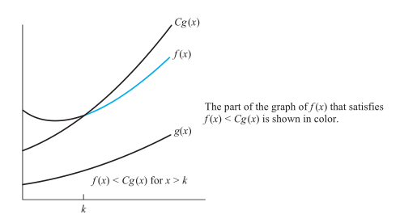
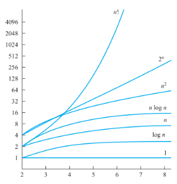
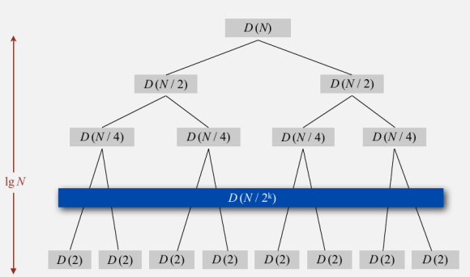
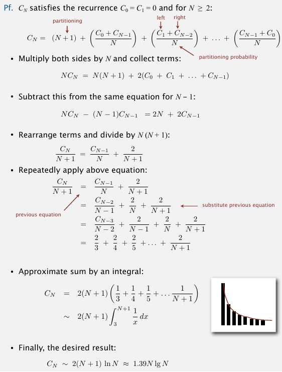
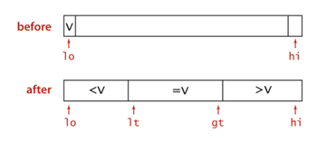
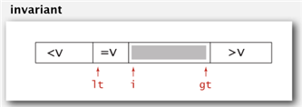
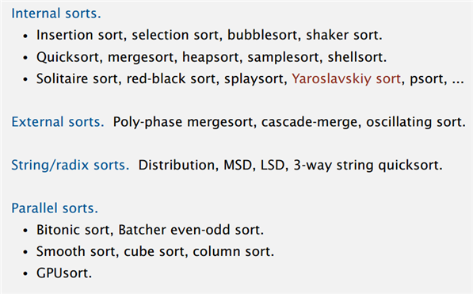
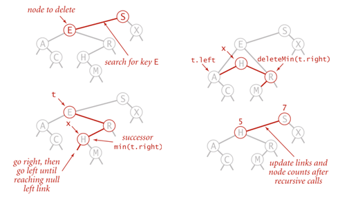

Algorithms
Table of Contents
1 Overview
1.1 Properties of algorithms
- Input
- Output
- Definiteness
The steps of an algorithm must be defined precisely.
- Correctness
An algorithm should produce the correct output values for each set of input
values.
- Finiteness
An algorithm should produce the desired output after a finite (but perhaps
large) number of steps for any input in the set.
- Effectiveness
It must be possible to perform each step of an algorithm exactly and in a
finite amount of time.
- Generality
The procedure should be applicable for all problems of the desired form, not
just for a particular set of input values.
2 Algorithmic Paradigm
Algorithmic paradigm is a general approach based on a particular
concept that can be construct algorithms for solving a variety of problems.
- Greedy Algorithm
- Brute Force
- Divide-and-Conquer
- Dynamic Programming
- Backtracking
- Probabilistic Algorithms
- etc.
2.1 Brute Force
2.1.1 Description
Brute force is an important and basic paradigm.
Solve problem in the most straightforward manner based
on the statement of the problem.
Brute force algorithms are naive approaches for solving problems.
E.g: find max by comparing one by one, find sum by add all numbers,
also buble, insertion and selection sorts.
3 Analysis of Algorithms
Depends on computer
- relative speed(on same machine)
- absolute speed(on diff machine)
Big Idea for analyze Algorithms
- Ignore machine-dependent constants
- Look at growth of \(T(n)\) as \(n\to \infty\)
3.1 Asymptotic Notation
3.1.1 \(\theta\) Notation
do two things:
- Drop low order terms
- ignore leading constants
Ex: \(3n^3+90n^2-5n+6046 = \theta(n^3)\)
related to O notation and \(\Omega\) notation
As \(n\to \infty\), \(\theta(n^2)\) alg always beats a \(\theta(n^3)\) alg
3.1.2 Big-O Notation
- Definition
Let f and g be functions from the set of integers or the set of real numbers
to the set of real numbers.
We say \(f(x)\) is \(O(g(x))\) if there are constants C and k such that:
\(|f(x)|\leq C|g(x)|\) whenever \(x > k\) . (Called "\(f(x)\) is Big-O of \(g(x)\)")
C and k are called witnesses to the relationship \(f(x)\) is \(O(g(x))\).
Note that: \(O(g(x))\) is a set.

- A useful approach for finding witnesses
- select a value of k for which the size of |f(x)| can be easily estimated.
- use k to find a value of C for \(|f(x)|\leq|O(g(x))|\) if \(x > k\)
- A useful approach for finding witnesses
- On Polynomails
Let \(f(x)=a_n x^n + a_{n-1}x^{n-1} + ... + a_1x + a_0\), then \(f(x)\) is \(O(x^n)\)
- Important Functions
$$1, \log n,n,n\log n, n^2, 2^n, n!$$ Samples:
Growth Name Code description example 1 constant a=b+c statement add two numbers \(\log N\) logarithmic while(N>1){N=N/2;…} divide in half binary search \(N\) linear for 1 to N loop find the maximum \(N\log N\) linearithmic merge sort divide and conquer merge sort \(N^2\) quadratic 2 for loops(one nested) double loop check all pairs \(N^3\) cubic 3 for loops triple loop check all triples \(2^N\) exponentail combinatorial search exhaustive search check all subsets
- Combination
If \(f_1(x)\) is \(O(g_1(x))\) and \(f_2(x)\) is \(O(g_2(x))\) ,
then \((f_1+f_2)(x)\) is \(O(max(|g_1(x)|,|g_2(x)|)\) .
If \(f_1(x)\) is \(O(g_1(x))\) and \(f_2(x)\) is \(O(g_2(x))\) ,
then \((f_1f_2)(x)\) is \(O(g_1(x)g_2(x))\) .
- Transition
When \(f(x)\) is \(O(g(x))\) and \(g(x)\) is \(O(h(x))\) ,
then \(f(x)\) is \(O(h(x))\)
3.1.3 Big-\(\Omega\)
- Definition
We say \(f(x)\) is \(\Omega(g(x))\) if there are constants C and k such that:
\(|f(x)|\geq C|g(x)|\) whenever \(x > k\) .
- Relationg with Big-O
\(f(x)\) is \(\Omega(g(x))\) if and only if \(g(x)\) is \(O(f(x))\)
- Relationg with Big-O
3.1.4 Big-\(\Theta\)
- Definition
for \(f(x)\) , it's important to know a relatively simple function \(g(x)\)
\(\Theta\) notation covers this case.
If \(f(x)\) is \(O(g(x))\) and \(f(x)\) is \(\Omega(g(x))\), we can say \(f(x)\) is \(\Theta(g(x))\) .
Note that:
When \(f(x)\) is \(\Omega(g(x))\) , then \(g(x)\) is also \(\Omega(f(x))\) .
Big-O notation also has same case.
Combinition with Big-O's and Big-\(\Omega\)'s definition:
\(f(x)\) is \(\Theta(g(x))\) if there are constants \(C_1\) , \(C_2\) and k such that:
\(C_1|g(x)| \geq |f(x)|\geq C_2|g(x)|\) whenever \(x > k\) .
3.1.5 little-o Notation
- Definition
\(f(x)\) is \(o(g(x))\) , If \(\lim_{x\to \infty} \frac{f(x)}{g(x)} = 0\) .- The common case is \(f(x)\to \infty\) and \(g(x)\to \infty\) .
It means \(g(x)\) grows faster than \(f(x)\) .
- Note that:
If \(f(x)=\frac{1}{x^2}\) and \(g(x)=\frac{1}{x}\) , also leades to \(\lim_{x\to \infty} \frac{f(x)}{g(x)} = 0\) .
- Relation between Big-O and little-O
- \(f(x)\ is\ o(g(x)) \to f(x)\ is \ O(g(x))\)
- \(f(x)\ is\ O(g(x)) \nrightarrow f(x)\ is\ o(g(x))\) E.g: \(f(x) = g(x) = x\)
- The common case is \(f(x)\to \infty\) and \(g(x)\to \infty\) .
3.1.6 Asymptotic
We say f and g are asymptotic, if: $$\lim_{x\to \infty} \frac{f(x)}{g(x)} = 1$$ aslo write \(f(x)\sim g(x)\)
3.2 Divide and Conquer Analyzing
Suppose:
a: devision yield a subproblems
b: 1/b size of the original
c: some constant
D(n): divide cost
C(n): conquer cost
3.3 Computer Time Used Table
Assuming each bit operation takes \(10^{-11}\) seconds
| Problem Size n | \(\log n\) | \(n\) | \(n\log n\) | \(n^2\) | \(2^n\) | \(n!\) |
|---|---|---|---|---|---|---|
| \(10\) | \(3\times10^{-11}\) s | \(10^{-10}\) s | \(3\times10^{-10}\) s | \(10^{-9}\) s | \(10^{-8}\) | \(3\times10^{-7}\) |
| \(10^2\) | \(7\times10^{-11}\) s | \(10^{-9}\) s | \(7\times10^{-9}\) s | \(10^{-7}\) s | \(4\times 10^11\) yr | * |
| \(10^3\) | \(1.0\times10^{-10}\) s | \(10^{-8}\) s | \(1\times10^{-7}\) s | \(10^{-5}\) s | * | * |
| \(10^4\) | \(1.3\times10^{-10}\) s | \(10^{-7}\) s | \(1\times10^{-6}\) s | \(10^{-3}\) s | * | * |
| \(10^5\) | \(1.7\times10^{-10}\) s | \(10^{-6}\) s | \(2\times10^{-5}\) s | 0.1 s | * | * |
| \(10^6\) | \(2\times10^{-10}\) s | \(10^{-5}\) s | \(2\times10^{-4}\) s | 0.17 min | * | * |
3.4 Cost of Basic Operations
| operation | example | nanoseconds |
|---|---|---|
| integer add | a + b | 2.1 |
| integer multiply | a * b | 2.4 |
| integer divide | a / b | 5.4 |
| floating-point add | a + b | 4.6 |
| floating-point multiply | a / b | 13.5 |
| sine | Math.sin(theta) | 91.3 |
| arctangent | Math.atan2(y, x) | 129.0 |
4 Sorting
4.1 Bubble Sort
BUBBLE-SORT(A)
n = A.length
for i = 1 to n
for j = 1 to n - i
if A[j] > A[j+1]
Swap(A[j], A[j+1])
- Worst: \(O(n^2)\)
- Best: \(O(n)\)
4.2 Selection Sort
SELECTION-SORT(A)
n = A.length
for i = 1 to n - 1
min = i
for j = i + 1 to n
if A[j] < A[min]
min = j
Swap(A[i], A[min])
- Worst: \(O(n^2)\)
- Best: \(O(n^2)\)
4.3 Insertion Sort
4.3.1 Pseudocode
INSERTION-SORT(A)
for j = 2 to A.length
key = A[j]
#Insert A[j] into the sorted sequence A[1…j-1]
i = j - 1
while i > 0 and A[i] > key
A[i+1] = A[i]
i = i - 1
A[i+1] = key
4.3.2 Analysis
| INSERTION-SORT(A) | cost | times |
| for j = 2 to A.length | c1 | n |
| key = A[j] | c2 | n-1 |
| i = j - 1 | c3 | n-1 |
| while i > 0 and A[i] > key | c4 | \(\sum_{j=2}^{n}t_j\) |
| A[i+1] = A[i] | c5 | \(\sum_{j=2}^{n}(t_j-1)\) |
| i = i - 1 | c6 | \(\sum_{j=2}^{n}(t_j-1)\) |
| A[i+1] = key | c7 | n-1 |
- If the array is already sorted, then \(t_j = 1\). It's the best case.
\(T(n)\) is \(O(n)\)
- If the array is in reverse sorted, then \(t_j = j\). It's the worst case.
\(\sum_{j=2}^{n}j = \frac{n(n+1)}{2} - 1\) and \(\sum_{j=2}^{n}(j-1) = \frac{(n-1)n}{2}\)
\(T(n)\) is \(O(n^2)\)
4.3.3 Binary Insertion Sort
A optimization for insertion sort by using BinarySeach
instead of LinearSearch to find the location to insert.
Therefore, performs \(O(\log n)\) comparisons to find the location.
BINARY-INSERTION-SORT(A)
for i = 2 to A.length
begin = 1
end = j - 1
while begin < end
mid = floor((begin + end ) / 2)
if A[j] > A[mid]
begin = mid + 1
else
end = mid
if A[j] > A[begin]
location = begin + 1
else
location = begin
temp = A[j]
for i = j - 1 to location
A[i+1] = A[i]
A[location] = temp
4.4 Shell Sort


For every subsequences, uses insertion sort.
- How to define h?
Still an open problem.
The performance depends on this h.
One famous sequence is Marcin Ciura's gap sequence.
gaps = [701, 301, 132, 57, 23, 10, 4, 1]
4.4.1 Pseudocode
SHELL-SORT(A)
n = A.Length
while h < n/3
h = 3*h+1; #Uses gap sequence: 3n+1
while h >= 1
#Uses insertion sort to sort subsequence
for i = 1 to h
for j = i + h; j < n ; j += h
key = A[j]
k = j - h
while k > 0 and A[k] > key
A[k+h] = A[k]
k = k - h
A[k+h] = key
4.4.2 Analysis
- Worst: ?
- Best: \(O(n)\)
4.5 Merge Sort
4.5.1 Description
- If length=1, done
- Divide array into two halves.
- Recursively sort each half.
- Merge two halves.
4.5.2 Pseudocode
- SORT
SORT(A, start, end)
len = end - start + 1
mid = start + ceil(len/2)
if len > 1
SORT(A, start, mid - 1)
SORT(A, mid, end)
Merge(A, start, mid, end)
- MERGE
MERGE(A, start, mid, end)
len = end - start + 1
l = start
r = mid
t = 1
target = new Array[len]
while (l != mid) && (r != end + 1)
if A[l] < A[r]
target[t++] = A[l++]
else
target[t++] = A[r++]
while l != mid
target[t++] = A[l++]
while r != end + 1
target[t++] = A[r++]
for i = 1 to len - 1
A[s++] = target[i]
4.5.3 Analysis

T(n) = 2T(n/2) + 1n
= 4T(n/4) + 2n
= 8T(n/8) + 3n)
…
= nT(n/n) + log n * n
= nlog n
4.5.4 Bottom-up Version
Simple and non-recursive version of mergesort
- Pass through array, merging subarrays of size 1.
- Repeat for subarrays of size 2, 4, 8, 16, ….
4.6 Quick Sort
4.6.1 Description
- Pick the partition key a[j](Random shuffle, Median-of-3 etc.)
- Partition so that, no larger entry to the left of j, no smaller entry to the right of j
- Sort recursively
4.6.2 Pseudocode
partitionIndex PARTITION(A, lo, hi)
#/Pick A[lo] be the partition key
i = lo, j = hi
while true
while A[++i] < A[lo]
if i == hi
break
while A[j–] > A[lo]
if j == lo
break
if i >= j
break
exchange(a[i], a[j])
exchange(a[j], a[lo])
return j
SORT(A, lo, hi)
if lo >= hi
return
j = PARTITION(A, lo, hi)
SORT(A, lo, j-1)
SORT(A, j+1, hi)
4.6.3 Analysis
- Best Case
Partition key is always in the middle.
\(O(n\log n)\)
- Worst Case
Partition key is the smallest or the largest.
\(O(n^2)\)
- Average Case

4.6.4 Optimization
- Uses insertion sort for less than 10 items
- Median of sample
- small inputs: middle entry
- medium inputs: median of 3
- large inputs: Tukey's ninther
Take 3 samples, find medium of 9.
Uses at most 12 compares.
- Duplicate keys
The standard qsort compares dulplicate keys with partition key and do noting.
It takes quadratic time to deal with dulplicate keys.
- 3-Way Quick Sort

- Let v be partitioing item a[lo]
- Scan i from left to right
(a[i] < v): exchange a[lt] with a[i]; increment both lt and i
(a[i] > v): exchange a[gt] with a[i]; decrement gt
(a[i] == v): increment i

- Analysis
Low Bound:
If there are n distinct keys and \(i^{th}\) one occurs \(x_i\) times
$$\log(\frac{N!}{x_1!x_2!\cdots x_n!}) \sim -\sum_{i=1}^{n} x_i \log\frac{x_i}{N}$$ NlogN when all distinct.
Linear when only a constant number of distinct keys
- 3-Way Quick Sort
4.7 Heap Sort
Uses data structure Priority Queue with Binary Heap (Complete Tree).
Parent node should be larger than any of its child.
- Uses bottom-up method to construct binary heap.
- Swap root and last leaf.
- Pop last leaf.
- sink(root).
- swim: if BH[k] > BH[floor(k/2)] Exchange(BH[k], BH[floor(k/2)])
- sink:
c = floor(k/2)
if (BH[c] < BH[c+1]) c++;
if BH[k] < BH[c] Exchange(BH[k], BH[c])
*In java or C#, key should be a readonly mumber.
4.8 Summary
4.8.1 Category
- Insert: Insertion, Shell
- Select: Selection, Heap
- Exchange: Buble, Quick
- Merge
4.8.2 Analysis
| Sort | T-Avg | T-Best | T-Worst | Space | Stable? |
|---|---|---|---|---|---|
| Bubble | \(N^2/2\) | \(N^2/2\) | \(N^2/2\) | 1 | Yes |
| Selection | \(N^2/2\) | \(N^2/2\) | \(N^2/2\) | 1 | Yes |
| Insertion | \(N^2/4\) | N | \(N^2/2\) | 1 | Yes |
| Shell | ? | N | ? | 1 | No |
| Heap | \(O(n\log n)\) | \(O(n\log n)\) | \(O(n\log n)\) | 1 | No |
| Merge | NlogN | NlogN | NlogN | N | Yes |
| Quick | 2NlnN | NlogN | \(N^2/2\) | 1 | No |
| 3-way Quick | NlogN | N | \(N^2/2\) | 1 | No |
4.8.3 Choice Facts
- Stable?
- Parallel?
- Deterministric?
- Keys all distinct?
- Multiple key types?
- Linked list or array?
- Large or small items?
- Is array randomly ordered?
- Need guaranteed performance?
4.8.4 More Sort Methods

5 Searching
5.1 Linear Search
LINEAR_SEARCH(A, v)
for i = 1 to A.length
if v == A[i]
return i
return 0
- \(O(n^2)\)
5.2 Binary Search
BINARY_SEARCH(A, v)
#A need to be a sorted increasing sequence*
i = 1
j = n
while i < j
m = floor((i + j)/2)
if v > A[m]
i = m + 1
else
j = m
if v == A[i]
return i
else
return 0
5.3 Summary
| Implementation | T-Worst | T-Avg |
|---|---|---|
| sequential search | N | N/2 |
| binary search | logN | logN |
| BST | N | 1.39logN |
| 2-3 tree | clogN | clogN |
| red-black BST | 2logN | almost 1logN |
6 Data Structure
6.1 Queue
6.1.1 API
- enqueue
- dequeue
- isEmpty
6.2 Stack
6.2.1 API
- push
- pop
- isEmpty
6.3 Priority Queue
6.3.1 API
- MaxPQ()
- void insert(Key v)
- Key delMax()
- bool isEmpty()
- Key max()
- int size()
6.3.2 Inner Structure
Binary Heap (complete binary tree)
- Property: All nodes are greater/less than or equal to each of its child.
6.3.3 Analysis
| insert | delMax | max |
|---|---|---|
| \(\log N\) | \(\log N\) | 1 |
6.4 Symbol Table
6.4.1 API
ST<Key, Value>
- ST()
- void put(Key key, Value val)
- Value get(Key key)
- void delete(Key key)
- bool contains(Key key)
- bool isEmpty()
- int size()
6.4.2 Hibbard Deletion
- 0 child: delete node; set parent link to null;
- 1 child: delete node; set parent link to its child;
- 2 children:

6.4.3 Analysis
| Implementation | search(wc) | insert(wc) | delete(wc) | search(ac) | insert(wc) | delete(ac) |
|---|---|---|---|---|---|---|
| seq search | N | N | N | N/2 | N | N/2 |
| binary search | \(\log N\) | N | N | \(\log N\) | N/2 | N/2 |
| BST | N | N | N | \(\log N\) | \(\log N\) | ? |
| red-black BST | \(\log N\) | \(\log N\) | \(\log N\) | \(\log N\) | \(\log N\) | \(\log N\) |
7 Classic Problems
7.1 Halting Problem
Construct two procedure: H(P, I) and K(P)
H(P, I): if P(I) halts output 'halts' else output 'loops forever'
K(P): if H(P, P) output is 'halts' loop forever else H(P, P) halt
Then we run K(K), leads a contradiction.